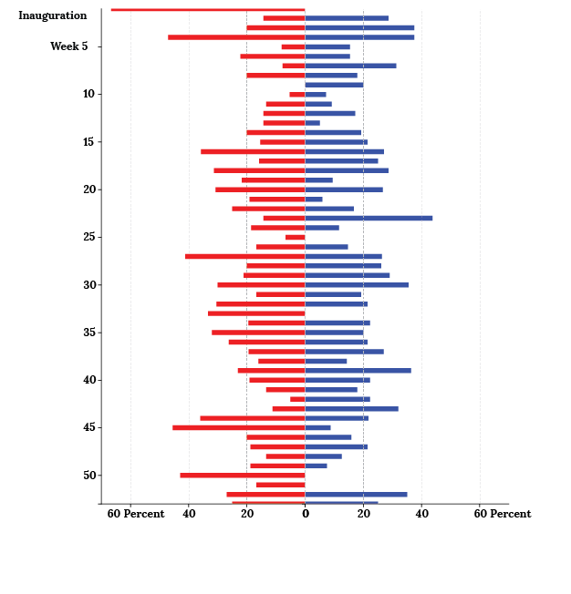

BY Weihua Li
Published July 23, 2018
Have some bad news? Dump them all on Friday.
No, really. In the old days, Friday is when the While House Press Office "take out the trash." If there is any bad news, or news that will cast the administration under a unflattering, the press office would release all of them on Friday -- or more specifically, Friday afternoon.
There are two main reasons behind this practice: 1) By dumping all bad news all at one, each piece of news will likely get less media scrutiny, less column inches, or less airtime. 2) People don't really read the news during weekends, or at least that's the conventional wisdom.
It was an effective way to control press coverage and the narrative. But time has changed. People now read news on their phones and via social media. The way to disseminate news is also different: with the help of social media, government officials, including @readDonaldTrump, now have the opportunity to cut out the reporters and communicate directly to the public.
Still, I wonder: is Friday news dump still a thing?
Let's talk data
I scraped press releases from the Trump White House and the Obama White House, then group all the press releases by week. Here is a side-by-side comparison of how much news each administration dumped during their first year in office.
Friday news dump: Trump v.s. Obama
Taking a look of Trump's and Obama's first year in office, how many press releases did they publish on Fridays? Is that a lot comparing with that week?
SOURCE: whitehouse.gov, obamawhitehouse.archives.gov
At first glance, there isn't much difference between the two administrations. For Trump, there were five weeks where the White House publish 40 percent of that week's press release on Fridays, whereas in Obama's first year in office, that only happened once.
Now let's look into those peaks.
On Friday, June 19, 2009, the Obama White House published 22 press releases. These include natural disaster declarations, executive branch appointments, and, among other things, transcript of President Obama's phone call with coaches of Los Angeles Lakers and Pittsburgh Penguins.
Hardly any scandalous revelations that would undermine his entire administration.
It's a similar story for the Trump administration. On Friday, Jan. 20, 2017, there is a peak indicating that his administration published 60 percent of press releases on Friday ... But that's also his inauguration. The While House published total of 5 press releases during that weekend, three of which were on Friday, and none of which calls for public scrutiny. Although, in one press release published on Saturday, then Press Secretary Sean Spicer made a huge deal on how many people actually attended the president's inauguration.
And see the two spikes toward the end of Trump's first year? Well, those were Thanksgiving and Christmas, when the administration didn't publish much, so the Fridays stood out.
That perhaps is the flaw of this analysis: the sheer amount of press releases does not represent the importance of each news item. Before I come up with an evaluation of newsworthiness, the question of Friday news dump remains unanswered.